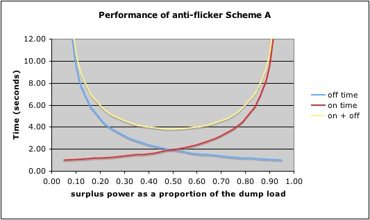
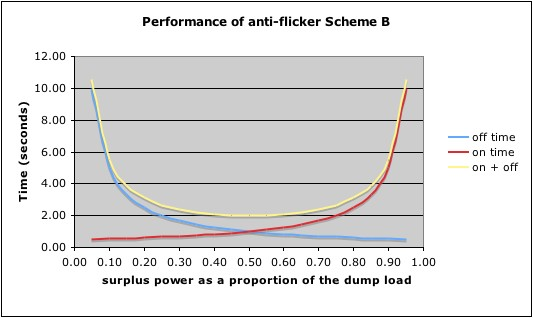

I think most people are using systems based on Robin's MK2 design for PV control. This uses an "energy bucket" concept with a single threshold at the half-full point. The triac is fired whenever the energy level is above the threshold.
This arrangement works well but it also results in the highest possible flicker frequency. For example if you have 240W of solar and a 3kW load the flicker frequency will be about 4Hz, which can be very annoying.
It occurred to me while messing about with my 3-phase system that it isn't necessary to fire the triac this often providing the energy level stays within the bucket. If you set an upper and a lower threshold and don't fire the triac until the energy reaches the upper level, and don't stop firing it until it reaches the lower level, then the flicker frequency will be greatly reduced.
With the above example, and an upper threshold of 3/4 full and a lower threshold of 1/4 full, the flicker frequency will be reduced to 0.033Hz (once every 30 seconds), which is hardly noticeable.
I can't see any downside to this. Am I missing something?
(I have posted an updated version of my PLL code on the other thread if anyone wants to try this out)
Re: Reducing flicker in PV controllers
It's been pointed out to me by Robert Wall that my maths is a bit screwed up here. With the above example and the 2 thresholds the flicker rate will be once every 8-and-a-bit seconds, not every 30 s.
This is still slow enough to be much less annoying than 4Hz though so I think the principle is sound.
Re: Reducing flicker in PV controllers
May work but whilst it reduces the frequency of the flicker it is still very noticeable.
Re: Reducing flicker in PV controllers
I thought I'd try and calculate whether it was possible to meet the flicker requirements using this technique after finding this document which gives most of the information you need (it's aimed at loads >16A but also has info for loads <16A).
If we assume...
D is the difference between thresholds in Joules
S is the solar power being generated in Watts
L is the load in Watts
T is the flicker period
then:
time to reach upper threshold is D/S
time to reach lower threshold is D/(L-S)
T = D/S + D/(L-S)
It's clear that T is infinite at the extremes when S=0 (load fully off) or S=L (load fully on) and the minimum value of T is likely to be when S=L/2. You can prove that this is in fact true by differentiating the equation above.
so Tmin = 2D/L + 2D/L = 4D/L
Taking the best possible threshold spacing of 0 and 3600J that will stay within the 1Whr energy bucket (obviously with no margin for error but we are just checking for the possibility of meeting the specs.) and a load of 3000W
Tmin = 4 x 3600 / 3000 = 4.8 seconds or 12.5/minute
Checking this figure against the graph in the document above gives a maximum voltage drop of slightly more than 1%.
The standard impedance for the flicker test is "0.40 ohms resistive in series with 0.25 ohms inductive at 50Hz". This approximates to 0.47 Ohms in series with the load of about 19.2 Ohms. So the voltage drop will be about 2.4% or roughly double the spec requirement.
There is however a get-out clause in the spec that says if you can't meet the requirements then you must state the supply impedance which will meet the spec and the equipment can then only be installed in systems which meet his impedance.
In practical terms this means that it would be possible to meet the flicker spec if the voltage drop in your installation is 1% or better. Off to check mine now...
Anyone care to verify my reasoning for this?
Re: Reducing flicker in PV controllers
I did a similar sum a while ago and, whilst I can't remember the details, I came to a similar conclusion: namely that the spec gives a low value for the system fault level - clearly with the expectation that most systems will be better therefore flicker will be less of a problem - and with a more typical system impedance it was likely that you would be close to the threshold of acceptability.
Re: Reducing flicker in PV controllers
Makes sense Robert, they have to force equipment manufacturers to design to the worst case but at least they've given them a way out for well engineered installations.
I just checked the voltage drop for my immersion heater and it's about 2.5V, so right on the cusp. I think I'd be happy with that. My 10kW floor heating though may be more of a problem!
Re: Reducing flicker in PV controllers
I've just measured mine too:
It looks like I'm inside it at less than 0.8% dip! That puts my fault level at more than about 450 kVA, or the impedance at 0.13 Ohms or less. (The immersion is 16.5 Ohms cold,
so 3.5 kW?labelled 220/230 V, 3000 W so about 3.5 kW at 245 V).(N.B. I just grabbed any emonTx sketch - it's uncalibrated, but that doesn't matter for this).
Re: Reducing flicker in PV controllers
So far the flicker debate has ignored possible impacts on how power is conserved. At first glance because the duty cycle remains the same changing the PRF will have no effect on electrical consumption. However, consider the following:
If the flicker frequency is low then it’s possible for energy that is ‘stored’ in the meter to be extracted by an intermittent load (appliance X) that happens to be energised during the diverting period of the PV controller’s cycle.
If the flicker frequency is high then any surplus PV power will be cycled through the meter and sent to the heat store within a fraction of a second.
In the above example although no power is wasted it means that in the case of a high flicker frequency a pulse of electricity is purchased to run appliance X in order to save a pulse of gas which costs less than the electricity used.
How significant this is over the course of a year I have don’t know but it’s likely to be very small. It does support the low PRF approach though.
Re: Reducing flicker in PV controllers
Sorry Brian, your argument is wrong, it won't happen. The repetition rate is not fixed, but depends on when the two thresholds are reached. So using your example again, if appliance 'x' turns on while the dump load too is on, then the dump load will turn off that much sooner, because the bottom threshold will be hit sooner. Or to put it another way, the frequency is controlled by the two rates, not by time.
Re: Reducing flicker in PV controllers
Yup, I reckon you are right! I should not have had that second glass of wine :)
Re: Reducing flicker in PV controllers
With a dual-threshold arrangement, the fastest rate of flicker occurs when surplus PV is exactly half the capacity of the dump load. With a 3kW load and thresholds at the 25% and 75% points, the system will cycle on and off every 2.4 seconds. At all other rates of surplus power, the cycle rate will be slower than this.
More details, plus a demo tool and video footage of same, are at http://openenergymonitor.org/emon/node/841?page=11 posted on 23/12/12
I wonder what the flicker spec says about performance requirements at 0.4Hz?
Re: Reducing flicker in PV controllers
Less than about 0.9% dip.
Re: Reducing flicker in PV controllers
Thanks Robert,
Sorry, I've just seen that this ground had been covered already. At least the target now appears to be within striking distance!
Re: Reducing flicker in PV controllers
Voltage Dip Curves - versions
I have come across three versions of the curves thus far. Some graphs don't reproduce well, I have traced all onto the same scale.
The sources are:
Harmonics and Flicker - the low frequency end of the EMC spectrum, Dr. Philip D Slade, Exeter University,
http://www.compliance-club.com/archive/old_archive/990619.html
IEC61000-3-11 Flicker Measurements Up To 75A, Voltech Instruments Ltd. Oxford.
www.tmworld.com/file/4213-104_152_0_5W.pdf
Handbook of Power Quality, Angelo Baggini,
Google Books
Re: Reducing flicker in PV controllers
The Voltech graph seems to be the rogue there, the other 2 are almost the same.
I also found a full copy of the first edition of the spec (now out of date) here.
As Robert has shown with his low-impedance supply, it is possible to build a system that meets the requirements if your supply is good enough but for a universal system you'd have to build in a flicker frequency limit and allow the bucket to overflow when it is reached.
Re: Reducing flicker in PV controllers
As a simple stand-alone solution, the idea of having two energy thresholds to minimise flicker is fine. But if this precaution does not meet the flicker spec under all foreseeable conditions, then some additional logic will be needed.
This new logic would determine whether the triac may be changed from its present state or not. Preventing the triac from turning off sounds a distinctly bad idea, so this new logic should only be applied at the upper end of the bucket's range when the dump load would normally be turned on.
For a given 'impedance' of the mains, a maximum rate of flicker is defined. A simple counter which prevents the triac from ever turning on within N mains cycles of when it last turned on should guarantee that this requirement is always met.
The purpose of the energy bucket's 1Wh range now needs to be reviewed. Thus far, with the level of the threshold for firing the triac having always been set to the half-way point (1800J), the upper half of the the bucket's capacity has never had any obvious purpose.
Now, with the anti-flicker logic in place, the level in the bucket will rise above the normal operating threshold whenever the triac is prevented from turning on. The upper part of the energy bucket therefore needs to act as a reservoir. This could be easily achieved by just reducing the threshold point from 1800J to around 500J.
The reservoir of virtual energy will naturally 'overflow' when its maximum level of 3600J is reached. This does not necessarily mean that any real energy will have been lost through the supply meter. Because the two measurement systems are not actively synchronised, there will always be some uncertainty as to how the supply meter will behave.
The operation of this scheme (or any other) could be readily checked out using the Demo tool that I posted recently. I'd be happy to do this but it may have to wait a few days.
I think it's now safe to say that the anti-flicker requirements can definitely be met by this kind of power diversion system. Yes, there could be some loss of 'free' energy under certain conditions, but this aspect could no doubt be configurable to match the user's needs.
Re: Reducing flicker in PV controllers
Robin said:
For a given 'impedance' of the mains, a maximum rate of flicker is defined. A simple counter which prevents the triac from ever turning on within N mains cycles of when it last turned on should guarantee that this requirement is always met.
Are you considering the effective reduction in the impedance as the power for the dump load becomes increasingly provided by the PV system? As the flicker frequency increases with increasing PV power the effective impedance must reduce.
Re: Reducing flicker in PV controllers
MartinR: Are you considering the effective reduction in the impedance as the power for the dump load becomes increasingly provided by the PV system? As the flicker frequency increases with increasing PV power the effective impedance must reduce.
Er, in a word, No. I'm assuming that anyone who is interested in meeting the flicker spec will be in a position to quantify the 'impedance' of their mains supply so that the appropriate value of N can be determined. N is the number of mains cycles that must occur between consecutive off-to-on transitions of the dump load.
Once the value of N has been set, I think the system should work very well. Whilst the triac is obliged to remain off, the upper part of the energy bucket will act as a reservoir until the triac is able to turn on. Thereafter, the load will remain 'on' until the (single) threshold is reached, at which point the triac will immediately turn off.
When minimal surplus power is available, the load will cycle at a rate that just meets the flicker spec. By contrast, if using the twin threshold approach, the cycle rate could drop to virtually nil. This is because the triac, once activated, has to remain on for such a long time.
MartinR: for a universal system you'd have to build in a flicker frequency limit and allow the bucket to overflow when it is reached.
Agreed, and I think this arrangement would do the job perfectly.
Re: Reducing flicker in PV controllers
I think you meant "Brian D" in your first comment there Robin
I'm not sure it's as simple as you say since the spec gives a maximum number of flickers per minute, presumably any 60 second period, and there's also a long-term flicker requirement.
Re: Reducing flicker in PV controllers
Sorry Martin, I'd not checked the author closely enough (I don't think I understood the point anyway!)
As you say, the flicker spec is stated in terms of transitions per minute, so it would seem best for any new anti-flicker logic to be constructed on a similar basis. But with the weather being so fickle, I'm assuming that it's sensible to interpret this spec in terms of a maximum switching rate such as 0.4Hz. Logically, I suppose, the new logic could simple count up all of the normally occuring transitions and then switch the triac fully off as necessary to prevent any relevant limit from being breached :-|
The short term requirement can be easily implemented by using a counter which prevents the triac from coming back on too soon. If there's an additional requirement for long term flicker, that would presumably just involve another counter or three, or whatever. Once the various requirements have been fully understood, creating the necessary logic to implement them should be straightforward enough.
All of this complexity can be hidden away in a subroutine which is called whenever the power-distribution logic would like to turn the triac on. The request will either be authorised or denied.
Re: Reducing flicker in PV controllers
It may be worth mentioning that the supply impedance is not constant- it will vary as the network is reconfigured (though probably not by very much); and if mains voltage is being measured (which it must be, of course), then it should be possible to measure the dip 'on-the-fly' and calculate the permissible flicker rate.
Re: Reducing flicker in PV controllers
Is this not the same as having a fixed block length long enough to meet the max flicker frequency and adjusting the mark space ratio of triac on :off cycles within this block to give an overall zero average power.
The limitation to the max block length would be set by the energy packets being imported/exported at 50% mark space being less than that which triggers the meter.
I have done some experiments looking at the effects on a lamp connected to the mains while a 3kW load was being switched with a burst firing circuit
I found that the flicker effect seems to be more pronounced with low wattage bulbs and for single cycle bursts subjectively seems to peak when the load is driven at 1 cycle on to 5 off. After changing it to say 10 on 50 off the flicker is obviously at a much lower speed and does not seem to be anything like as obvious.
Re: Reducing flicker in PV controllers
Is this not the same as having a fixed block length long enough to meet the max flicker frequency and adjusting the mark space ratio of triac on :off cycles within this block to give an overall zero average power.
Yes, once the system is operational in steady conditions, I think it will behave much as you've described. By delaying the switch-on of the triac, the upper part of the reservoir will record how much energy can safely be dumped once the go-ahead is given. Once allowed to go 'on', the load will remain active until all of that reserve capacity has been used up.
The worst case situation will surely be when the rate of surplus power is 50% of the dump load's rating. To remain within the sweet zone of the utility meter, a 3kW dump load would need to be cycled on and off every three seconds or so. If this behaviour is faster that the flicker spec will allow, then some 'free' surplus power would have to be discarded, as Martin has said.
The better that the system is calibrated, the closer one can safely go to using the full 1Wh's worth of flexibility that the meter allows.
Re: Reducing flicker in PV controllers
A few days ago, I wrote:
This new logic would determine whether the triac may be changed from its present state or not. Preventing the triac from turning off sounds a distinctly bad idea, so this new logic should only be applied at the upper end of the bucket's range when the dump load would normally be turned on.
Having just updated my FlickerDemo tool to work in this way, its behaviour was not always as I envisaged. Although consecutive off-to-on transitions of the triac are never closer than specified, the system can adopt an irregular pattern in which the triac is on for alternate long and short bursts. I fear that this uneven pattern could be more distracting than the problem we're trying to solve.
The big advantage of a dual-threshold hysteresis-based approach is that the triac will always stay on or off for a decent amount of time. Adding an extra requirement such that it may not come back on again before a specified period has elapsed would seem to be the most satisfactory anti-flicker arrangement that is available.
The attached (version 2) demo works in this way. As posted, the minimum repetition period is set at 5 seconds which can be seen to cause some surplus energy to be lost when the bucket's level gets to 3600J and it 'overflows'. This only occurs when surplus power is around 50% of the dump load's rating. With the min repetition period reduced to 3 seconds, very little if any energy is lost.
The lower threshold is currently set at 20% of the bucket's capacity. This allows the upper 80% of the bucket to be used as an energy reservoir. Setting the threshold to be any lower than this would require great precision when calibrating the system.
Re: Reducing flicker in PV controllers
Here is a simulation tool which can hopefully provide most of the anti-flicker measures that have been discussed to date. In particular, it can cope with multiple loads, each with its own triac. Anti-flicker logic is now an integral part of the standard logic. The "normal" (flicking) mode is a special case, just as a circle is a special case of an elipse.
After a 7-second delay (added for the benefit of emonTx users), the Serial monitor shows the functionality that is supported:
A sample output is attached in which the user-input was:
'g' - to get the action started
4500 - which caused triac[0] to turn on full and triac[1] to cycle on/off under a/f restrictions
'p' - pause
'g' - go
'11000' - serious sunshine!! (triacs 0-2 went full on, and triac[3] cycled under a/f restrictions)
'p' - time to relax :-)
'g' - all good things have to end sometime :-(
1234 - clouds have returned
0 - shutdown
As with previous versions of FlickerDemo, pin9 controls the trigger for the first triac, so a bulb can be usefully be added to show what triac[0] is doing. Unlike previous versions, this one does not require an AC voltage sensor.
The on-board LED comes on whenever the 3600J energy bucket overflows or underflows. Note that this only happens when the rate of surplus PV changes substantially. A constant rate of 11kW involves no energy loss or cost penalty after the system has settled. This takes approx 10 seconds, depending on the a/f settings.
This info was posted yesterday on a new thread in error and has been moved here.
Re: Reducing flicker in PV controllers
Here's an improved version of my multi-load Flicker Demo tool in which the amount of surplus PV can only change at a pre-determined rate. Applying an instantaneous step-change in surplus power, whilst imposing rigid a/f restrictions, does not make much sense. With the new version, any change of power setting is applied gradually, which seems more realistic. A sample output file is attached.
Various anti-flicker parameters are closely related: the separation of the upper and lower threshold (now specified as 0 - 0.5); the time interval between successive transitions at any triac; and the max rate of change of surplus power. As posted, this latter value is 300W per second:
float maxRateOfChangeOfPower = 300; // in Watts per second
There is now a proper mechanism to capture any overflow or underflow events, the revised output format now being:
Serial.println ("- The selected level of surplus energy (W)");
Serial.println ("- The current level of surplus energy (W)");
Serial.println ("- The on/off state of each triac");
Serial.println ("- the level in the energy bucket");
Serial.println ("- any overflow events since the last display line?");
Serial.println ("- any underflow events since the last display line?");
If you're at all interested in multi-load operation, do please give this simulation a try. All you need is an Arduino or similar, it no longer requires a mains supply. As posted, the tool is in DEBUG mode and should run straight out of the box ...
Re: Reducing flicker in PV controllers
I've just tried the above demo tool on the Windows laptop, and it doesn't run :-(
The easiest way around this is to simply comment out the pause(); line at the very end of setup(). A pause/go facility seemed like a good idea - but not if it stops the whole thing from working! With this line removed, the actual demo works fine which is the only important thing really .
There's no problem when using my PowerPC-based Mac. These Serial aspects are infuriating at times ...
Re: Reducing flicker in PV controllers
As posted, my demo tool has a restriction that prevents the triac turning off within 1.5 seconds of when it turned on. This makes little sense as it is bound to invoke cost for the user. When there is minimal surplus power, the energy bucket will slowly fill until the triac is able to come on. With a 3 kW load, it is essential that the load is turned off again within 1.2 seconds, otherwise a cost penalty will undoubtedly be incurred by the user. (3 kW for 1.2 seconds consumes 3600 Joules.)
The A/F logic in my Mk2a/Mk2i code is different in that the restriction applies between consecutive activations of the triac rather than consecutive transitions. Although this alternative criterion is easier to meet (which is why I wrote it that way), it may be regarded as "cheating" by some.
If anyone has any thoughts about this - i.e. about how to implement a more meaningful anti-flicker regime - I would be most interested to hear about it, preferably via this thread. Having posted various simulations/builds, there doesn't seem to have been much progress on this topic of late. I'm happy enough to include a more robust anti-flicker regime in my burst-mode PV Router code, but am currently lacking any guidance as to how to go about this.
As with most things, anti-flicker measures will need to be designed before they can be implemented!
Re: Reducing flicker in PV controllers
Don't forget Robin that the minimum flicker period you would be allowed in order to meet the specs for any particular installation is dependent on the voltage drop that occurs when the load switches on.
You could potentially measure that in your script and calculate the minimum period for a given installation.
Re: Reducing flicker in PV controllers
Yes, Martin, that would indeed be possible, as Robert has already suggested.
I've never intended that my power router design should be accurately calibrated, so measuring a small voltage drop and then altering the A/F settings accordingly is just not a route that that I would wish to take. It should be entirely feasible to measure the percentage voltage drop when the triac comes on. I would certainly find it a lot easier to do this by using an Arduino sketch than by any other means.
Not so long ago, anti-flicker was seen as a critical requirement by many contributors. Now that I've included a simple algorithm or two, both based on your idea of having two energy thresholds, I was just hoping for some more input as to how this arrangement could be refined.
I have an idea for an alternative (calibration-free) approach which appears to simulate OK. But I'd better see how it works in practice before posting anything, weather permitting.
Re: Reducing flicker in PV controllers
As you know Robin I have just built up an emonTx with the emonGLCD display and without any calibration at all it seems pretty good. I'm only using the solar pv inverter reading as a comparison, but in the six months I've had that the kwh meter reading on that, compared with the grid meter, it's within a KWH or two. But for accuracy how long is the piece of string?
Re the regulations, which I still need to study, is there a place where the voltage drop measurement needs to be taken?
Re: Reducing flicker in PV controllers
Sorry, I no expert in the anti-flicker arena. I'm just trying to cobble together something which meets the requirements. Given the vagaries of surplus PV, this one seems a difficult nut to crack. If we were operating an industrial process, whereby some load or other were cycling on and off all day, things would be very different.
I'm interested to know what code you've had running on the emonTx. Also, how you can get such accuracy without any calibration. Or is the alignment between two pieces of kit, neither of which Arduino-based?
Very good point about where exactly the voltage drop measurement should be taken. I can only assume at the grid connection point, which in practice probably means the bus-bar in the CU (the cover of which one should, of course, never remove!)
Re: Reducing flicker in PV controllers
Back in October, on a different thread, I posted a piece about how digital meters record forward and backward flow. At that time, I don't think anti-flicker measures were being seriously considered. That material seems more relevant now.
If a poorly calibrated a/f system were to divert power in chunks that were any larger than 3600 J, the user's meter would register one pulse every time. All benefit of the system would then have disappeared. The meter acts like a ratchet; the "sweet zone" advances by 3600J up the consumed energy scale whenever a meter pulse occurs. But unless the sketch were to record such pulses, and take appropriate action (e.g. to instantly
zeroset the energy bucket to full), it has no way of knowing what's going on at the meter.[Update - the best course of action to be taken when a pulse is detected is not obvious to me. Maybe the bucket should be set to just below the upper energy threshold. Then, we can feel confident that the next 'on' burst of the load will not trigger another pulse. If a meter pulse were to be detected during any period while the triac is 'on', that event would certainly be of significance.]
In practice, this behaviour should be noticeable, so the a/f logic could be altered somehow to prevent it. But if it only occurred under certain conditions, a/f measures could prove to be an expensive feature.
Re: Reducing flicker in PV controllers
Hi Robin,
I just used the following and was surprised at how accurate it seems to be, but then I've been using efergy monitors. It does depend upon what accuracy is required though.
https://github.com/openenergymonitor/emonTxFirmware (emonTx_CT123_Voltage)
and
https://github.com/openenergymonitor/EmonGLCD (solarPV)
But unless the sketch were to record such pulses, and take appropriate action (e.g. to instantly zero set the energy bucket to full), it has no way of knowing what's going on at the meter.
I was wondering about that one, but on the bit of testing I've done I've not noticed the meter advance, but then we've not had much sun. I also tried a spare 3 phase meter with the load (heaters) going through phase 1 the correct way and the PV (heaters) going through the 2nd phase but the wrong way in anti flicker mode and the meter didn't advance.
What happens on the disk type meter?
Re: Reducing flicker in PV controllers
What happens on the disk type meter?
The three disks are on the same shaft!
Re: Reducing flicker in PV controllers
I've just taken some measurements of voltage dip. The sketch calculates real power and rms voltage for each mains cycle, but only one pair of values in every 50 is sent to the Serial monitor. I just turned the
fire3 kW heater on and off every few seconds and recorded the results. Apart from putting a blank line between each set of on/off lines, the data has not otherwise been changed.The load was drawn from one side of a 13A socket, and the voltage measurement was taken from the other side of the same socket. The voltage dip appears to be around 6V, so that's approx 2.6% of 230V. But that is on the same ring-main. When I measured the dip some months ago with a hand-held multimeter, I think it was around 2V near the CU on a convenient spur that was fitted for our PV.
How this affects our A/F requirements, I wouldn't like to say. Sketch attached, if anyone would like to repeat the measurements.
Re: Reducing flicker in PV controllers
The three disks are on the same shaft!
I know that, I mean in a single phase meter.
I meant if the disk was midway between the ratchet stop and the point of turning the next digit over will it rotate and counter rotate crossing the point of where it changes the digits in the display. Or is the ratchet at that point? Guess i'll have to get a disk meter out from my pile of bits and see.
Typical my disk meter doesn't have a ratchet.
Re: Reducing flicker in PV controllers
Or is the ratchet at that point?
In the only meter that I've inspected, the ratchet mechanism is a little piece of plastic that sits on top of a shaft like a top hat. When the shaft rotates in the forward direction, the 'hat just bobs this way and that and does not impede the motion. But when the shaft starts to rotate in the other direction, the plastic soon gets moved in such a way as to impede further movement. There must be a clutch of some kind in there which slips when this mechanism cuts in.
Depending on the state of the various components, the ratchet mechanism will allow a variable amount of reverse movement to occur after the meter ceases to move in its forward direction. This permitted amount of reverse movement never appears to be less than around half of a disc revolution which is 2.5 Wh on the meter that I have. During this reverse movement, it is possible that the numbers on the dial will move back ever so slightly, but I think it unlikely that this would have any non-reversible effect. I certainly don't think that there's any possibility of the meter rapidly ratcheting up numbers as small quantities of energy flow forward and back.
A disc-meter has a mechanical basis, and the visible numbers only increase when the disc has advanced by a certain number of turns - I'm fairly sure there are 200 turns/kWh for the meter I have. Moreover, after ceasing to consume energy, you can always export around 2.5 J and be certain of getting it back without penalty or loss.
A digital meter is much more insidious. Diverting surplus energy in chunks of 3700 J would result in one 3600 J pulse on every occasion. By contrast, a non-reversing disc meter would only charge the user for 100W per iteration. So that's 36 times more penalty for being slightly out on the calibration if you have a digital meter!
Optimal anti-flicker measures, for use with a digital meter, is not a straightforward matter. A tool which simulates both the supply meter and the 'energy diverter' may be of use. The effect of different 'phasing' between the two could then be investigated. Monitoring the meter's LED activity, so that the two measurement systems could then be 'locked' into step would seem to be an excellent idea, IMHO.
I'll no doubt be pondering about all of this when next walking the dog!
Re: Reducing flicker in PV controllers
The objective of any anti-flicker measure is to reduce the frequency at which the load is switched. Having said which, it is clearly important not to stray beyond the "sweet zone" of the meter.
But what would actually happen if we were to just stray a bit outside this zone? Would we be taking mico-pence or mega-bucks? This seemed like a job for another simulation, in which all the various component can be assembled together to see what happens.
Cue FlickerToolWithMeter. As its name suggests, this simulation includes the supply meter as well as the normal energy bucket type of power router. It requires no hardware other than an Arduino or similar.
The key point about a digital meter is that its performance is not symmetrical. Nudge one end, and a few Joules slip quietly away. But if you nudge the other end, the scorpion stings! A 1 Wh pulse is applied and the sweet zone instantly advances by 3600 Joules. Thankfully, the simulation does a better job of explaining how this than I can.
The attached display is for a run where the settings appear to be innoccuous enough. There's a 1.5 second restrictiion between consecutive transitions, and upper and lower energy-bucket limits of 10% and 90% respectively. The calibraton of the (simulated) rig was correct.
At startup, there was no PV so nothing of interest was happening, I then applied 1500W of PV. Although this is a step-change, progress towards any new power target is ramped at a settable rate, In this case, I was using 500W/sec, so it took 3s to ramp from 0W to 1500W.
Having reached the 1500W mark, the system settled down nicely with the triac diverting power as expected. No problems. The two energy buckets (Mk2 and meter) are perfectly in step.
When I increased the power to 90% (2700W), small periods of overflow could then be seen at the router's energy bucket. On each occasion, the reference point of the meter can be seen to change by a similar amount. But no big deal, just a bit of leakage.
Then the PV was dropped to just 10% (300J). Needless to say, it takes much longer now to reach the upper threshold, but just look at what happens when the triac comes on. On each occasion, it stays on just long enough to nudge the lower end of the meter wherupon a chargeable pulse is applied. But the worst is yet to come. As the Mk2's energy bucket refills, so the meter's reference point / offset / sweet zone slips until we're not far from where we were before. Then the cycles repeats, and we are charged again for our efforts. We may think that we're diverting surplus power, but we're actually heating our water at grid cost, and allowing a similar amount to slip away at the same time.
For anyone who's at all interested in A/F measures, I think this behaviour is well worth studying in some detail and understanding.
Finally, at -1000 W of PV (heating a kettle maybe), the system's behaviour is fairly self-evident. As it is at 3500W when the triac is fully on and 500W leaks away.
This simulation could no doubt benefit from a bit more refinement, but it seems better for it to be out in the public arena for all to see and use in the meantime.
PS. Try relaxing the A/F constraints so that the problem goes away, and then adjust the setting of float calErrorOfRouter = 1.0; // 0.9 under-reads by -10%; 1.1 over-reads by 10%.
It may just come back ...
Re: Reducing flicker in PV controllers
Very Interesting. I'll give it a try later today.
I'm running mine in anti flicker mode as my 3Kw loads are not purely just resistive and require full voltage. The system seems to be running extremely well but as the sun is so scarce at the moment its hard to be absolutely certain. We also have a house base load of a minimum of 800w - 900w. Yesterday morning was sunny but had loads of fast moving clouds and some duller periods. Over a 5 hour period we imported about 1.5 KWh but we also did 2 loads of washing. I may fit another meter in to see what we export- if any.
Re: Reducing flicker in PV controllers
I haven't tried your simulation Robin but I think the issue here is that you are putting a restriction on the time between adjacent voltage changes. When you have either very little PV or PV close to the load power then the transition in one direction will be fast but the transition in the other direction will be slow so the number of transitions per minute may still meet the spec even though some transitions are close together.
As I understand the requirement the restriction is on the number of transitions per minute. I don't think there's any minimum time between individual transitions is there?
Re: Reducing flicker in PV controllers
You're entirely correct, Martin, to point out that A/F measures behave differently when different amounts of surplus power are available. Mid-power gives the fastest rate of cycling, but near-minimal and near-maximum rates are more likely to result in underflow or overflow, as you've pointed out. The location of the twin energy levels is/are relevant too. As yet, I'm not aware that anyone has suggested how an A/F algorithm should actually be implemented. I've just posted a couple of ideas to get the ball rolling.
When in A/F mode, my Mk2a/Mk2i versions always turn the triac off when the energy bucket's lower limit is reached, this being to avoid any chance of incurring charges. When necessary, the triac's off->on transitions are delayed to keep the triac's cycle time below a specified rate. My Flicker Demo tool, however, places a time restriction on each pair of consecutive transitions, so both under- and over-flow can occur. The main purpose of this tool to promote discussion about the subject. As far as I'm aware, the direction of voltage steps is not of relevance to the A/F specs; it is only their magnitude that matters.
I do have an alternative A/F scheme in the pipeline. This arrangement will have only one threshold and require no calibration. It will also have a difference performance profile across the range of powers that we need to deal with.
It may be that we're getting rather carried away with this one. A/F specifications are no doubt intended for standard domestic or commercial appliances where the cycling rate would be relatively constant.
Having said which, the unabated flicking of my original Mk2 PV Router design is not ideal, and I am grateful for everyone who has encouraged me to do something about it!
Re: Reducing flicker in PV controllers
I've been running Mk2i in Anti flicker mode today and I did watch the meter while the pv amount available was very close to the demand with the triac on and I noticed the odd pulse on the meter. My meter led lights up green when feeding the grid, but its so dull you can't see it. (I have a second meter that always has the green led on and that's hard to see even in the dark).
Saying that I am exceptionally happy with how its running and it still needs some setting up, and possibly a different CT. My batteries have been very nicely charged up today using it and its been much better than going over to turn the chargers on and off depending on the suns power and the clouds going past.
I'd publicly like to thank Robin for his all work on this, its an exceptionally clever idea.
Re: Reducing flicker in PV controllers
I'd publicly like to thank Robin for his all work on this, its an exceptionally clever idea.
Thanks, positive feedback is always appreciated. I'm happy to take some credit for the Mk2 base code, but the anti-flicker feature is not really mine. Having tried to ignore the problem for as long as possible, I've had to concede that it is a good idea to include some kind of A/F measure. If you, or anyone else, is seeing any pulses at the meter while power is being diverted, I would strongly recommend reducing the A/F criteria until they go away. Especially if the neighbours aren't breathing down your neck!
With any Mk2x code of mine, I would not expect there to be any chargeable events while power is being diverted. Leakage to the grid, yes, but no meter pulses. As posted, the triac always turns off as soon as the lower energy threshold is reached. Maybe you've made some changes that have affected this part of your code? I'll send you a PM.
Re: Reducing flicker in PV controllers
It may be possible that something is turning on in the house just as the energy bucket gets to it low threshold or that my powercal is slightly too high. When i calibrated for that there was quite a high range and I chose a value just higher than the average.
Re: Reducing flicker in PV controllers
The guidance for setting powerCal in most Mk2 sketches ends with:
In the modified sketch you sent me, I noticed you had powerCal set to 0.8. This sounds very high. If this value is correct for your hardware, it suggests that you're using very little of the available range at the ADC. Without changing anything, try running RawSamplesTool, and see what your waveforms look like. If voltage and max current are not each spanning 80-90% of the available range, then you would do well to adjust your sensor's component values until they are. Then set powerCal to get the right value for a known load.
By far the easiest way to check powerCal is to run the code in Tallymode mode (just comment in the #define TALLYMODE line. I've yet to hear of anyone having used this feature, but it is ideal for calibration purposes. All you need is a suitable load, no multimeters or extra hardware is required. Calibration need not be done kW, a 60W bulb or similar should suffice. For the router to work correctly, its measurement side needs to be linear. So you should be able to calibrate it for power using Watts, and then divert power in kW (or in your case, tens of kW) no problem!
Re: Reducing flicker in PV controllers
Hi Robin,
I did use TALLYMODE for the set up of PowerCal using a 2kw heater. One thing that does cross my mind though is how to check accurately that the 2KW heater is actually exactly 2KW. Various ways I've tried measuring it gives different values.Using TALLYMODE did give a spread on its results, suggesting it may be the sensors need to use more sensitive. You mentioned on one of your other threads a CT from Rapid that you used, but as you said in the thread, the one you have without the burden resistor wasn't available any longer, so I went with the 50A CT . That CT gives 30ma for 50A which as you say doesn't give that much range. I initially tried with an amp but that wasn't successful. I didn't really want to add an extra burden resistor but I guess that is a possibility. I moved the PowerCal value today down to 7.9 and that was much better. I think I probably will change the CT and will probably go for a Ring type one, with 1v for 50a if possible.
As you say calibration is very important in A/F mode. but I am extremely happy with how things are going. Today I had all sorts of loads on and the meter only advanced 0.5KWh and the sun was going behind clouds and we have a high house base load, without the washing machine and kettle.
I will try the RawSamplesTool.
Re: Reducing flicker in PV controllers
I do have an alternative A/F scheme in the pipeline. This arrangement will have only one threshold and require no calibration. It will also have a difference performance profile across the range of powers that we need to deal with.
Well, that was my prediction. The outcome is not quite as I envisaged, but that's the beauty of simulations. The profile of my alternative scheme (B) is actually just like the original one (A), but shifted up the time axis a bit.


Although both schemes do a similar job, they work in fundamentally different ways. Scheme A is as already posted but without any time constraint. It has two energy thresholds, their only relevance being their separation. Their absolute location within the 3600J bucket is of no consequence because the router's bucket is not linked to the meter in any absolute way.
Scheme B has a lesser performance but it has the major advantage that no calibration is required. Actually, that statement is not totally correct in that I'm relying on the manufacturer's calibration of my immersion heater. If it were to draw 4kW rather than 3kW, then Scheme B would fail.
The time delay in Scheme B is determined by how long it takes the dump load to drain the energy bucket from half-full. A 3kW load consumes 1800J in 0.6 seconds, so any value up to 0.5s seconds should be fine for this parameter.
As far as I can see, these are the only 'pure' implementations of anti-flicker logic that are possible. Additional timing constraints could no doubt be added if that were felt to be necessary. My gut feeling is that the published A/F specs are intended for conventional domestic or commercial appliances which can be tested under repeatable laboratory conditions. These specs should not be interpreted too literally for an application that is subject to the vagaries of the British Weather.
Both schemes will greatly reduce flicker when compared with any un-constrained burst-mode power diverter. And if properly implemented, neither should involve any cost penalty or loss of surplus power to the user.
All feedback welcome.
Re: Reducing flicker in PV controllers
Hi Robin
I have a question, with a 2 phase 230Volt system, will the MK2 work?
This is what I have in Spain.
Thanks
Re: Reducing flicker in PV controllers
Hi Marcus,
I see that Robert Wall has just answered a similar question that you posted on a different thread.
Maybe it would be best to start with the simple V&I sketch from the Building Blocks page. Once you have got the basic OEM measurement routines to work, then any version of the Mk2 power router should be OK. You may need to adjust the output components to suit your mains supply.
Your system will no doubt work much better than mine does at 54 degrees North :-(
Re: Reducing flicker in PV controllers
For the Scheme B A/F diagram that I posted yesterday, the underlying logic is not clear to see. Nor is it from the spreadsheet. Sorry for the omission.
My Scheme B logic is just as the original Mk2 energy-bucket setup, with one change:
"The triac may not switch state within D seconds of crossing the mid-point of the bucket."
As posted, D = 0.5 seconds.
Re: Reducing flicker in PV controllers
Since posting my original Mk2 Router design, I've always felt that it would be a good idea to somehow link the operation of its energy bucket to that of the utility meter. Recording events from the meter's LED is not difficult, nor is analysing their meaning, but I've never worked out what can be usefully done with this information.
A standard meter dispenses energy on demand in units of 1 Wh, or 3600 Joules. The user is then free to consume that energy at their leisure. The user may introduce small amounts of reverse flow, and no penalty is imposed providing that the meter's "sweet zone" is not exceeded. This is the 3600 J zone which lies immediately "beyond" the point where the last pulse occurred.
During normal operation, each "sweet zone" follows on consecutively after the previous one. Moreover, the user always gets the full benefit of each purchase of energy. If, however, export ever causes the meter's energy state to drop below the level where the most recent pulse occurred, the lower limit of the sweet zone is shifted accordingly.
If export were to continue for, say, 20 J beyond the 0 J point of the meter, then the meter's sweet zone would be permanently shifted down by 20 J to match this level. The next consumption pulse will therefore occur 20 J sooner than it would otherwise have done. 20 Joules of the energy that has been recently purchased by the user has been permanently donated back to the grid.
This clawback mechanism affects any system where there can be reverse flow. The amount of energy that is permanently lost, or "donated", to the grid following each meter pulse is approximately equal to the "depth" of the see-saw action that the energy profile takes.
In its normal mode, my Mk2 router only needs around 200J of elbow room, so the rate at which energy is lost by this process is fairly small. But when running in anti-flicker mode, the depth of its reciprocating action is far greater, usually covering around 80% of the available range. In this case, for every charge pulse that occurs, around 2800 J of the 3600 J that has just been purchased will be donated back to the grid almost immediately.
In a perfect world, the two measurement systems - router and meter - would always remain in perfect alignment. In that case, the router would always know exactly when to turn the dump load on and off in order to remain in the meter's sweet zone.
But life is seldom like that. In our case, any non-linearity of the router's measurement system could result in slightly too much power being exported. Running the CT beyond its recommended output range would be likely to have just this effect when the amount of surplus PV is low. In the absence of any mechanism to keep the two systems in alignment, there is bound to be some relative drift between them.
While actively diverting surplus power, it seems inevitable that occasional pulses will be levied by the meter. Whenever a chargeable event is recorded by the meter, the goalposts immediately shift by 3600J. The consequence of this shift is that a considerable amount of energy (approx 0.8 Wh) will very soon be lost from the user's premises while the meter realigns itself to the energy profile that is in force. The first of my two (sketched!) sketches show this process in operation.
But what if we were to monitor the meter's LED. Could anything be done to mitigate the effect of such chargeable events while surplus power is being actively diverted? The answer to this question is most definitely, "Yes!".
Immediately after a chargeable event (aka meter pulse) occurs, there is no benefit whatsoever in exporting any energy. You're simply giving it away for someone else to use. The right time to export energy for subsequent reclaim is towards the end of the meter's sweet zone, shortly before the next pulse is due. Timely knowledge of the occurrence of each meter pulse can be used to align the state of the router's energy bucket with that of the meter. Whenever the meter reaches either end of its 1 Wh range, something happens at its LED. By monitoring and reacting to such stimuli, we can ensure that the two systems are accurately re-aligned at every available opportunity.
In particular, we need to ensure that no export of surplus energy takes place immediately following a meter pulse. To do this, we should reset the energy bucket's level to some suitable value near the upper end of its range whenever a pulse occurs. There is nothing underhand about doing this. We are merely "inventing" virtual energy to match the packet of real energy for which we have just been charged. The control logic can then work on this modified value of virtual energy in order to get the triac to direct our real energy as is best for our cause.
My second sketch shows such a scheme in operation. The net effect is to gain an extra (or longer) freebie burn of the dump load via the triac. Note that this scheme should only be used during periods when surplus power is being actively diverted, i.e when the triac is on. In practice, it may be necessary to record when the triac has been recently on because it could take around 50mS for each chargeable event to be detected. Meter pulses are around 38mS in duration.
A comprehensive system which uses all led events from the meter to maintain alignment with the router's energy bucket will take a bit more thinking about. Any ideas?